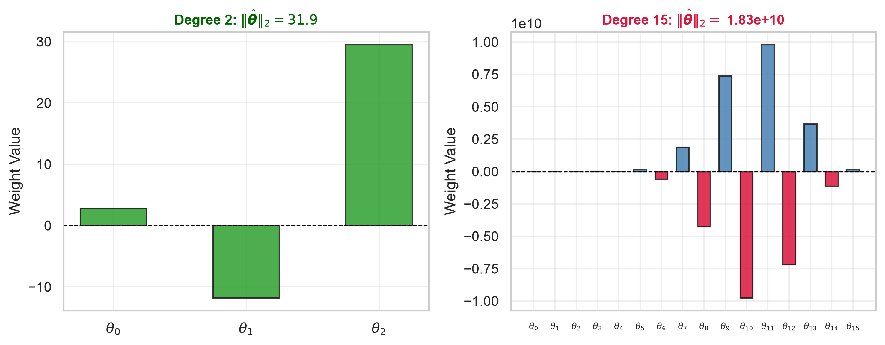
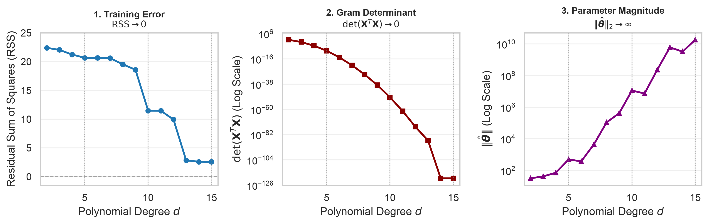

04 Linear Regression: Flexibility
Mathematics for Machine Learning
1. Categorical Inputs: One-Hot Encoding
Display One-Hot Encoded Design Matrix
df_encoding = pd.DataFrame({
'Intercept': 1,
'Age': [19, 18, 28, 33, 32, 31],
'Sex': ['female', 'male', 'male', 'male', 'male', 'female']
}, index=[f"Patient {i+1}" for i in range(6)])
df_encoding['is_female'] = (df_encoding['Sex'] == 'female').astype(int)
df_encoding['is_male'] = (df_encoding['Sex'] == 'male').astype(int)
df_encoding| Intercept | Age | Sex | is_female | is_male | |
|---|---|---|---|---|---|
| Patient 1 | 1 | 19 | female | 1 | 0 |
| Patient 2 | 1 | 18 | male | 0 | 1 |
| Patient 3 | 1 | 28 | male | 0 | 1 |
| Patient 4 | 1 | 33 | male | 0 | 1 |
| Patient 5 | 1 | 32 | male | 0 | 1 |
| Patient 6 | 1 | 31 | female | 1 | 0 |
2. Expanding the Design Matrix
2.1 Curvatures in Real Data
Assume that the true biological relationship is U-shaped: hospitalizations rise for both underweight (\(x < 18.5\)) and obesity (\(x > 30\)).
Linear Fit & Residual Plot
np.random.seed(42)
n_sim = 20
x_data = np.sort(np.random.uniform(16.0, 45.0, n_sim))
true_days = 2.0 + 0.040 * (x_data - 22.5)**2 + np.random.normal(0, 1.2, n_sim)
y_data = np.clip(true_days, 0.5, None)
xlabel = "Body Mass Index [kg/m²]"
ylabel = "Annual Inpatient Days [days/year]"
# Fit Simple Linear Model
n = len(x_data)
X_lin = np.column_stack([np.ones(n), x_data])
theta_lin = np.linalg.solve(X_lin.T @ X_lin, X_lin.T @ y_data)
y_pred_lin = X_lin @ theta_lin
e_lin = y_data - y_pred_lin
x_grid = np.linspace(x_data.min(), x_data.max(), 300)
X_grid_lin = np.column_stack([np.ones(300), x_grid])
y_grid_lin = X_grid_lin @ theta_lin
fig, axes = plt.subplots(1, 2, figsize=(10, 4.5))
# Panel 1: Variable Space
axes[0].scatter(x_data, y_data, color='#1f77b4', s=50, edgecolors='k', linewidth=0.7)
axes[0].plot(x_grid, y_grid_lin, color='#d62728', linewidth=2.2, label='Linear Regression')
axes[0].set_title('Variable Space')
axes[0].set_xlabel(xlabel)
axes[0].set_ylabel(ylabel)
axes[0].legend(fontsize=9, loc='best')
axes[0].grid(True, alpha=0.3)
# Panel 2: Residuals
axes[1].scatter(x_data, e_lin, color='#d62728', s=50, edgecolors='k', linewidth=0.7)
axes[1].axhline(y=0, color='black', linestyle='--', linewidth=1.0, alpha=0.8)
axes[1].set_title('Residuals')
axes[1].set_xlabel(xlabel)
axes[1].set_ylabel('Residual Error')
axes[1].grid(True, alpha=0.3)
plt.tight_layout()
plt.show()
\[\mathbf{X}^T \mathbf{e} = \mathbf{0}\]
2.2 Including New Features
Monotonic transformations (e.g. \(\log(x)\) or \(\sqrt{x}\)) may not suffice to capture curvature, but we can engineer new features:
\[\mathbf{y} = \theta_0 \begin{bmatrix} 1 \\ 1 \\ \vdots \\ 1 \end{bmatrix} + \theta_1 \begin{bmatrix} x_1 \\ x_2 \\ \vdots \\ x_n \end{bmatrix} + \theta_2 \begin{bmatrix} x_1^2 \\ x_2^2 \\ \vdots \\ x_n^2 \end{bmatrix} + \begin{bmatrix} e_1 \\ e_2 \\ \vdots \\ e_n \end{bmatrix} = \theta_0 \mathbf{1} + \theta_1 \mathbf{x} + \theta_2 \mathbf{x}^2 + \mathbf{e}\]
The model is still linear in the parameters \(\boldsymbol{\theta}\).
Quadratic Fit & Residual Plot
# Fit Quadratic Model
X_quad = np.column_stack([np.ones(n), x_data, x_data**2])
theta_quad = np.linalg.solve(X_quad.T @ X_quad, X_quad.T @ y_data)
y_pred_quad = X_quad @ theta_quad
e_quad = y_data - y_pred_quad
X_grid_quad = np.column_stack([np.ones(300), x_grid, x_grid**2])
y_grid_quad = X_grid_quad @ theta_quad
fig, axes = plt.subplots(1, 2, figsize=(10, 4.5))
# Panel 1: Quadratic Fit
axes[0].scatter(x_data, y_data, color='#1f77b4', s=50, edgecolors='k', linewidth=0.7)
axes[0].plot(x_grid, y_grid_quad, color='#2ca02c', linewidth=2.5)
axes[0].set_title('Quadratic Fit')
axes[0].set_xlabel(xlabel)
axes[0].set_ylabel(ylabel)
axes[0].grid(True, alpha=0.3)
# Panel 2: Residuals
axes[1].scatter(x_data, e_quad, color='#2ca02c', s=50, edgecolors='k', linewidth=0.7)
axes[1].axhline(y=0, color='black', linestyle='--', linewidth=1.0, alpha=0.8)
axes[1].set_title('Residuals')
axes[1].set_xlabel(xlabel)
axes[1].set_ylabel('Residual Error')
axes[1].grid(True, alpha=0.3)
plt.tight_layout()
plt.show()
3. Overfitting: Can We Do Better?
Adding \(x^2\) seemed to help, can we do even better by adding \(x^3, x^4, \dots\) ?
Higher polynomial powers add more basis vectors to \(\mathbf{X}\),
Flexible Models
x_min, x_max = x_data.min(), x_data.max()
x_norm = (x_data - x_min) / (x_max - x_min)
x_grid_500 = np.linspace(x_min, x_max, 500)
u_grid = (x_grid_500 - x_min) / (x_max - x_min)
degrees = [2, 15]
colors = ['#2ca02c', '#8c564b']
ss_tot = np.sum((y_data - np.mean(y_data))**2)
fig, ax = plt.subplots(figsize=(6, 6))
ax.scatter(x_data, y_data, color='#1f77b4', s=50, edgecolors='k', zorder=5)
for deg, col in zip(degrees, colors):
X_d = np.column_stack([x_norm**k for k in range(deg + 1)])
theta_d, _, _, _ = np.linalg.lstsq(X_d, y_data, rcond=None)
y_pred_train = X_d @ theta_d
ss_res = np.sum((y_data - y_pred_train)**2)
r2 = 1.0 - (ss_res / ss_tot)
X_grid = np.column_stack([u_grid**k for k in range(deg + 1)])
y_pred_grid = X_grid @ theta_d
ax.plot(x_grid_500, y_pred_grid, color=col, lw=2.2, label=f'Degree {deg} ($R^2 = {r2:.4f}$)')
ax.axhline(0, color='gray', linestyle='--', linewidth=1.0, alpha=0.7)
ax.set_ylim(-12, 30)
ax.set_title('Too Much Flexibility?', fontsize=13, fontweight='bold')
ax.set_xlabel(xlabel)
ax.set_ylabel(ylabel)
ax.legend(fontsize=10, loc='upper left')
ax.grid(True, alpha=0.3)
plt.tight_layout()
plt.show()
3.1 Signatures of Overfitting
To force a high-degree polynomial through noisy data points, adjacent terms must oscillate with large opposing magnitudes. Below we compare the fitted weights for Degree 2 versus Degree 15:
Inspect Parameter Weights for Degree 2 vs. Degree 15
X_2 = np.column_stack([x_norm**k for k in range(3)])
th_2, _, _, _ = np.linalg.lstsq(X_2, y_data, rcond=None)
norm_2 = np.linalg.norm(th_2)
X_15 = np.column_stack([x_norm**k for k in range(16)])
th_15, _, _, _ = np.linalg.lstsq(X_15, y_data, rcond=None)
norm_15 = np.linalg.norm(th_15)
fig, axes = plt.subplots(1, 2, figsize=(10, 4.0))
# Panel 1: Degree 2
axes[0].bar(range(len(th_2)), th_2, color='#2ca02c', alpha=0.85, edgecolor='k', width=0.5)
axes[0].axhline(0, color='black', lw=0.8, linestyle='--')
axes[0].set_xticks(range(len(th_2)))
axes[0].set_xticklabels([f"$\\theta_{{{k}}}$" for k in range(len(th_2))])
axes[0].set_title(f"Degree 2: $\\|\\hat{{\\boldsymbol{{\\theta}}}}\\|_2 = {norm_2:.1f}$", fontsize=11, fontweight='bold', color='darkgreen')
axes[0].set_ylabel("Weight Value")
axes[0].grid(True, alpha=0.3)
# Panel 2: Degree 15
axes[1].bar(range(len(th_15)), th_15, color=['crimson' if w < 0 else 'steelblue' for w in th_15],
alpha=0.85, edgecolor='k', width=0.6)
axes[1].axhline(0, color='black', lw=0.8, linestyle='--')
axes[1].set_xticks(range(len(th_15)))
axes[1].set_xticklabels([f"$\\theta_{{{k}}}$" for k in range(len(th_15))], fontsize=7)
axes[1].set_title(f"Degree 15: $\\|\\hat{{\\boldsymbol{{\\theta}}}}\\|_2 =$ {norm_15:.2e}", fontsize=11, fontweight='bold', color='crimson')
axes[1].set_ylabel("Weight Value")
axes[1].grid(True, alpha=0.3)
plt.tight_layout()
plt.show()
As the polynomial degree \(d\) increases, three coupled mathematical phenomena emerge simultaneously:
- Training Error (\(\text{RSS} \to 0\)): Residual Sum of Squares plunges as the model interpolates noise.
- Gram Matrix Invertibility (\(\det(\mathbf{X}^T\mathbf{X}) \to 0\)): Columns become nearly collinear, flattening the spanned parallelotope.
- Parameter Explosion (\(\|\hat{\boldsymbol{\theta}}\| \to \infty\)): The Euclidean norm shoots up exponentially.
Generate Overfitting Diagnostic Dashboard
degs = list(range(2, 16))
rss_vals = []
det_vals = []
norm_vals = []
for d in degs:
X_d = np.column_stack([x_norm**k for k in range(d + 1)])
G = X_d.T @ X_d
det = np.linalg.det(G)
det_vals.append(max(det, 1e-120))
th, _, _, _ = np.linalg.lstsq(X_d, y_data, rcond=None)
rss = np.sum((y_data - X_d @ th)**2)
rss_vals.append(rss)
norm_vals.append(np.linalg.norm(th))
fig, axes = plt.subplots(1, 3, figsize=(11, 3.6))
# Panel 1: RSS -> 0
axes[0].plot(degs, rss_vals, 'o-', color='#1f77b4', lw=2, ms=5)
axes[0].axhline(0, color='gray', linestyle='--', linewidth=1.0, alpha=0.7)
axes[0].set_ylim(-1.5, 25)
axes[0].set_title("1. Training Error\n$\\text{RSS} \\to 0$", fontsize=10, fontweight='bold')
axes[0].set_xlabel("Polynomial Degree $d$")
axes[0].set_ylabel("Residual Sum of Squares (RSS)")
# Panel 2: det(X^TX) -> 0
axes[1].plot(degs, det_vals, 's-', color='darkred', lw=2, ms=5)
axes[1].set_yscale('log')
axes[1].set_title("2. Gram Determinant\n$\\det(\\mathbf{X}^T\\mathbf{X}) \\to 0$", fontsize=10, fontweight='bold')
axes[1].set_xlabel("Polynomial Degree $d$")
axes[1].set_ylabel(r"$\det(\mathbf{X}^T\mathbf{X})$ (Log Scale)")
# Panel 3: ||theta||_2 -> infinity
axes[2].plot(degs, norm_vals, '^-', color='purple', lw=2, ms=5)
axes[2].set_yscale('log')
axes[2].set_title("3. Parameter Magnitude\n$\\|\\hat{\\boldsymbol{\\theta}}\\|_2 \\to \\infty$", fontsize=10, fontweight='bold')
axes[2].set_xlabel("Polynomial Degree $d$")
axes[2].set_ylabel(r"$\|\hat{\boldsymbol{\theta}}\|$ (Log Scale)")
ticks = [5, 10, 15]
for ax in axes:
ax.set_xticks(ticks)
ax.set_xlim(1.5, 15.5)
ax.grid(True, alpha=0.3, which='both')
for v in ticks:
ax.axvline(v, color='gray', linestyle=':', alpha=0.6, lw=1.0)
plt.tight_layout()
plt.show()
4. Summary
- Feature Engineering Unlocks Flexibility: One-hot dummy coding and polynomial basis expansions allow linear regression models to fit qualitative groups and non-linear curves while remaining strictly linear in the parameters \(\boldsymbol{\theta}\).
- OLS Orthogonality vs. Underfitting: The normal equations guarantee \(\mathbf{X}^T\mathbf{e} = \mathbf{0}\), but systematic trends in the residual patterns may signal underfitting.
- Signatures of Overfitting: Adding unchecked polynomial degrees drives training RSS towards zero, but collapses \(\det(\mathbf{X}^T\mathbf{X}) \to 0\) and causes parameter weights to explode into destructive alternating competition (\(\|\hat{\boldsymbol{\theta}}\| \to \infty\)).
- Controlling Flexibility: The explosive growth of \(\|\hat{\boldsymbol{\theta}}\|\) motivates regularization strategies and adjustments to the loss function.